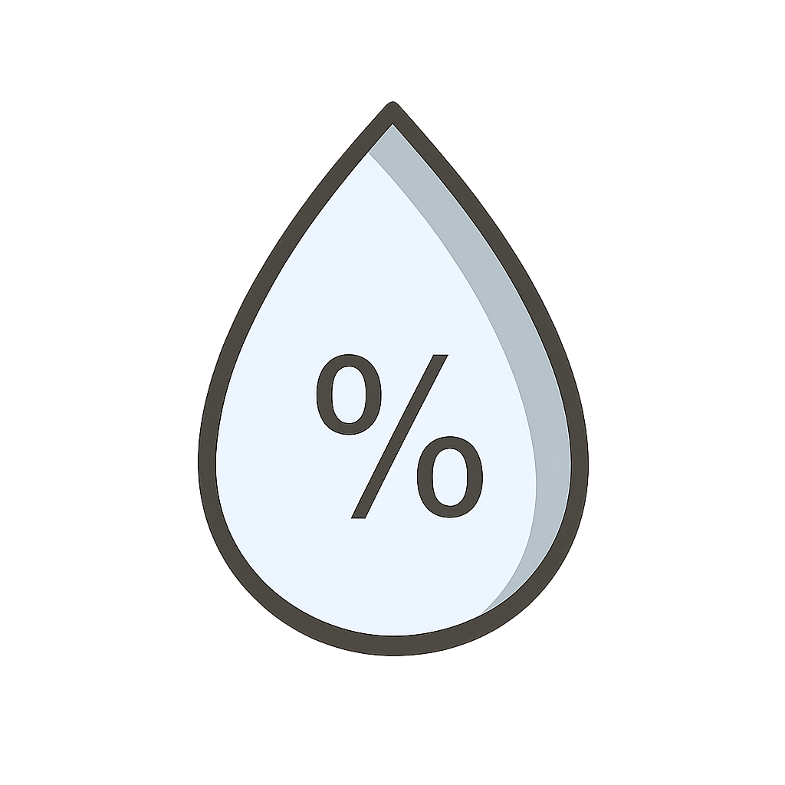

Problema
Agricultores enfrentam perdas financeiras, baixa produtividade e desperdício agrícola por desconhecerem cultivos adequados ao clima e solo regionais.
Tecnologia
Nosso projeto utiliza satélites para determinar a área em que o usuário está e verifica o melhor tipo de plantio para o clima da região.
Nosso projeto também verifica a temperatura do local para alertar se a temperatura está muito alta para o tipo de plantio.
Objetivos
Nosso objetivo é ajudar os agricultores a ter uma melhor produtividade sem ter tantos gastos.
Público-Alvo
Nosso público-alvo são agricultores que buscam inovação, tecnologia e soluções sustentáveis para aumentar produtividade, eficiência e desenvolvimento no campo.
Benefícios

Maior produtividade

Diminuição de gastos

Fortalecimento do agronegócio
Aplicação no dia a dia
- ✓ Monitoramento da temperatura
- ✓ Monitoramento da umidade
- ✓ Monitoramento do clima
